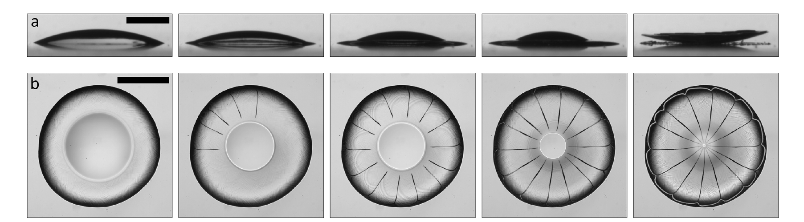
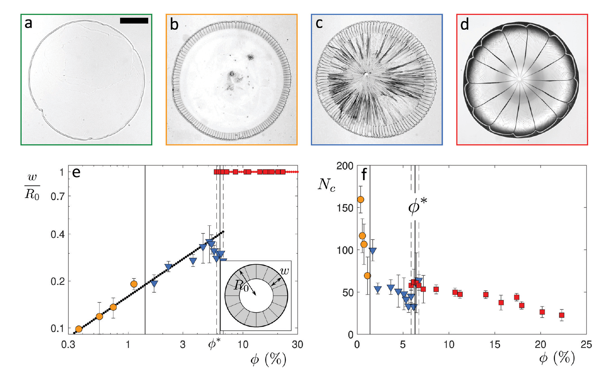
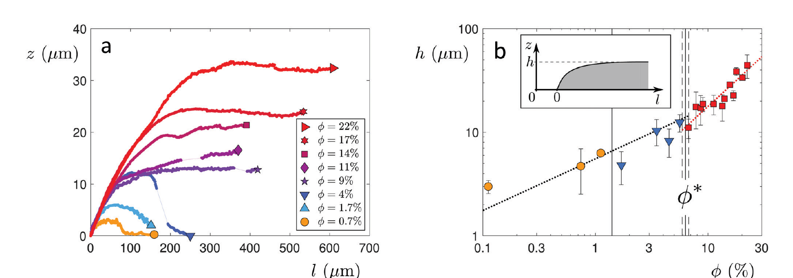
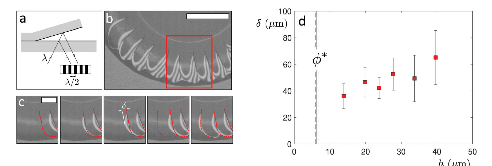

胶体液滴干燥后，裂纹间距为什么会变？
初始颗粒体积分数改变沉积层的厚度分布，进而影响裂纹形态与间距。局部脱层与裂纹的突发推进相伴。
Crack morphologies in drying suspension drops
研究背景
干燥胶体液滴有两个常见失败模式：稀悬浮液受接触线钉扎和蒸发驱动外流影响，颗粒聚集成不均匀的咖啡环；浓悬浮液则形成覆盖整个润湿区的固体沉积，但干燥应力会使其开裂。本文追问的不是这两个端点本身，而是随着初始粒子体积分数 φ 连续增加，沉积形状和裂纹形貌如何在二者之间过渡。
作者提出两条相连但需要分开理解的证据链：
φ → 径向沉积厚度分布 → 裂纹长度、分支方式和裂纹数；已有裂纹 → 邻近沉积层脱层抬升 → 下一条裂纹成核 → 环向雪崩式推进。
第一条解释“形成哪一类裂纹图案”，第二条解释“裂纹为什么像雪崩一样依次传播”。
研究方法
- 体系：水中 22 nm 二氧化硅颗粒 Ludox-AS40；通过稀释将初始粒子体积分数从
φ = 0.04%调到22%。 - 基准环境：
T = 22 ± 2 °C，RH = 27 ± 6%；洁净玻璃基底；高浓度样品的前进接触角约20 ± 3°。 - 液滴尺度：示意侧视序列使用
2 μL；主要底视裂纹实验使用0.3 μL；典型初始半径R₀ = 1.5 mm，小于水的毛细长度约2.7 mm，初始形状可近似球冠。 - 观测：倒置显微镜记录裂纹图案；激光扫描共聚焦显微镜在开裂和弯曲前重建径向高度
z(l)；λ = 534 nm的高速干涉显微镜识别沉积层与玻璃之间的空气层和脱层距离δ。 - 量化量：裂纹长度
w/R₀、外环裂纹数N_c、最大沉积高度h、脱层尺度δ。

- 回答的问题： 高浓度悬浮液滴从蒸发到形成花瓣状裂纹沉积，时序上经历了什么？
- 图中证据或方法：
φ = 22%时，侧视图显示球冠液体逐步回缩、固体沉积“脚”由外缘向中心生长，最终沉积层开裂并向上弯曲；底视图显示径向裂纹不是同时出现，而是沿圆周相继推进。侧视总时长约300 s，比例尺为1 mm。 - 支撑的结论： 颗粒不是在液滴完全干燥后才整体沉积；回缩液帽与多孔沉积区并存，裂纹和弯曲发生在干燥后期。该时序为“沉积内的孔弹性应力积累—释放”提供场景证据。
- 局限与读图注意： 这是代表性序列，不给出重复次数或应力测量；仅凭时间先后不能证明脱层导致开裂，真正的脱层证据来自 Figure 4。
具体结果
结果 1：体积分数将沉积划分为四个形貌区间
作者观察到随 φ 增大依次出现：
代表性 φ |
沉积与裂纹形态 | 关键特征 |
|---|---|---|
0.04% |
咖啡环 | 颗粒集中在外缘，几乎不见清晰裂纹 |
0.75% |
环形裂纹 | 外环出现大量径向裂纹，中心仍近乎无颗粒 |
1.7% |
双裂纹区 | 外环主裂纹向内传播后分支为更密的次级裂纹 |
22% |
单裂纹区 | 沉积覆盖整个润湿区，主裂纹不再分支并抵达中心 |

- 回答的问题： 是否存在可量化的形貌转变阈值，裂纹长度与数量怎样随
φ改变？ - 图中证据或方法： a-d 给出四种代表性终态。e 显示在环形裂纹与双裂纹区，
w/R₀ = 0.16√φ；到临界体积分数φ* = 6.3 ± 0.4%附近，w/R₀不连续跃迁到1，即裂纹贯穿半径。f 显示N_c总体随φ增大而下降，且阈值附近双裂纹样品的N_c低于单裂纹样品。 - 支撑的结论：
φ不只是连续改变裂纹多少，还通过改变沉积是“外环集中”还是“近似全盘覆盖”，触发分支裂纹到不分支裂纹的形貌切换。 - 局限与读图注意：
φ*是本体系中的经验阈值，不应直接当作其他颗粒、粒径或基底的普适常数；主文没有明确给出各点样本量和误差条定义。阈值区5.9%-6.7%两种形貌并存，说明转变存在样本间波动，并非确定性的锐利相变。
结果 2：真正连接体积分数与裂纹形态的是厚度分布
对于 φ < φ*，颗粒主要留在外环，环宽与最大高度都随 φ 增大；双裂纹区中，主裂纹转为次级分支的位置恰好对应沉积厚度明显下降的位置。对于 φ > φ*，厚度由边缘向内增加后进入近似平台，沉积趋于盘状均匀覆盖。
质量守恒给出两种标度：环形/双裂纹区有 w/R₀ ∝ √φ 且 h ∝ √φ；单裂纹区近似均匀覆盖，因此 h ∝ φ。作者用单裂纹区线性拟合反推出颗粒堆积分数 φ_p = 53.7%，再把同一 φ_p 放回低浓度标度，能较好描述 Figure 3b 的厚度数据。

- 回答的问题： Figure 2 的裂纹形貌变化是否能由开裂前的沉积厚度分布解释？
- 图中证据或方法： a 是开裂/弯曲前的径向高度
z(l)。低φ曲线在外缘出现峰值后很快降至零；高φ曲线升高后形成宽平台。b 显示低于φ*的最大高度近似随√φ增长，高于φ*则近似随φ线性增长，二者对应环状与盘状质量守恒模型。 - 支撑的结论： 初始浓度通过沉积几何发挥作用：更高
φ使沉积更厚、覆盖更完整；较薄区域更容易形成密集或分支裂纹，较厚且较均匀的盘状沉积形成更少、更长的不分支裂纹。 - 局限与读图注意： 作者以最大高度
h近似整体厚度，会高估沉积体积，因此拟合得到的φ_p = 53.7%低于随机致密堆积并不奇怪。低浓度“不再开裂”的h_c ≈ 1 μm与φ ≈ 0.03%对应关系来自外推和既有文献，而非本文在该极限的直接厚度测量。
关键机制
机制 A：厚度控制裂纹数量与分支
作者采用经典断裂能量观点：沉积层越薄，形成新裂纹所需的临界拉应力越高；如果这一阈值超过颗粒间液桥毛细压力可产生的拉应力，空气会先侵入而不是发生裂纹。达到可开裂厚度后，较薄膜层倾向形成间距更小、数量更多的裂纹。本文并未建立完整的应力演化模型，但 Figure 2 与 Figure 3 给出了厚度和裂纹数量共同随 φ 改变的实验对应关系。
机制 B：脱层介导雪崩式传播

- 回答的问题： 为什么一条裂纹形成后，下一条裂纹会在邻近位置出现，从而产生环向雪崩式传播？
- 图中证据或方法： a 给出
λ = 534 nm干涉测量原理；b-c 中的白色干涉条纹表明沉积层已离开玻璃并形成空气隙。时间间隔600 ms的序列显示脱层区从现有裂纹侧向扩展，达到距离δ时出现下一条裂纹。d 显示在单裂纹区中，δ随沉积厚度h总体增大，二者数量级相同。 - 支撑的结论： 新裂纹不是在未受扰动的膜上随机独立成核；已有裂纹释放和重新分配应力，同时伴随邻近沉积层脱粘、抬升，给下一条裂纹提供特征间距。作者据此把脱层视为雪崩式裂纹传播的中介过程。
- 局限与读图注意： Figure 4d 数据点不多、误差较大，作者没有给出
δ(h)的定量标度或因果干预；因此“脱层介导”有直接成像支持，但“脱层是唯一原因”仍强于现有证据。
整体机制链
更高初始 φ → 单位润湿面积内可沉积颗粒更多 → 外环加宽并最终转为近似盘状覆盖 → 沉积厚度增加、薄弱内区消失 → 裂纹数量下降、分支受抑制、主裂纹贯穿中心。
与此同时：第一条裂纹出现 → 邻近沉积层脱层并向侧方扩展 → 应力与界面边界条件被重新组织 → 在距离 δ 处出现下一条裂纹 → 裂纹沿圆周逐条雪崩式传播。
前一条机制链的前三个箭头由质量守恒与形貌/轮廓数据直接支持，厚度到裂纹选择的箭头依赖断裂理论和关联证据；后一条链有干涉成像和时序支持，但没有通过抑制脱层的对照实验完成严格因果验证。
适用范围与局限
- “仅由体积分数控制”措辞偏强。 作者确实改变了若干条件并称形貌保持稳健，但主文只系统展示
φ这一轴；颗粒尺寸、粒子-基底作用、离子强度、悬浮液流变性与基底力学性质并未被全面扫描。 - 重复性信息不足。 主文图给出部分误差条，却没有清楚报告各数据点的样本量、误差条定义或统计模型；
φ* = 6.3 ± 0.4%更适合作为该实验体系的过渡带概括。 - 厚度与裂纹数之间主要是关联加理论支持。 论文没有独立控制
h而保持φ不变，也没有给出能预测N_c(h)的完整断裂模型。 - 脱层机制是强时序证据，不是排他性因果证明。 干涉图直接看到空气层增长，但缺少改变黏附能或抑制脱层的对照来验证裂纹雪崩是否随之消失。